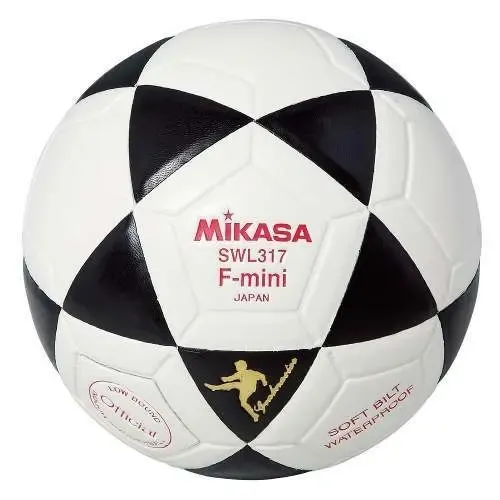
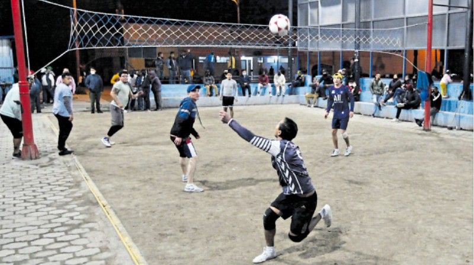

Galería de ecuavóley
Estas imágenes son ilustraciones originales creadas para explicar elementos del deporte; no son fotografías de partidos reales.



Video de ecuavóley
En el siguiente video se puede observar cómo se desarrolla un partido de ecuavóley.